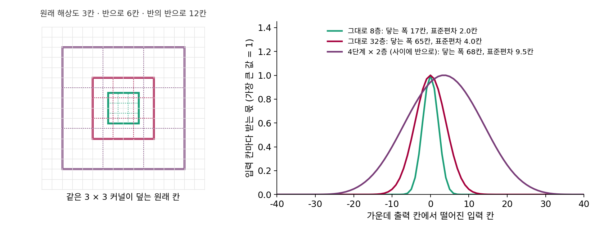

U-Net: 여러 해상도로 잡음을 읽는다
이 장의 물음
망가진 그림과 잡음 크기를 받아 원래 그림을 내놓는 복원기가 있으면, 잡음 크기를 줄여 가며 거듭 고쳐 새 그림을 만들 수 있었다. 이제 그 신경망을 그림 크기에서 실제로 짜야 한다. 실제 디퓨전 모델은 흔히 원래 그림 대신 섞인 잡음을 맞히게 한다. 잡음 섞인 그림은 xₜ = αₜx₀ + σₜε 이니, 원래 그림과 섞인 잡음 가운데 하나를 맞히면 다른 하나는 식 한 줄로 나온다(어느 쪽을 맞히게 할지는 뒤에서 따진다). 그래서 이 장은 그림과 잡음 수준을 받아 그림과 같은 크기의 잡음 어림을 내놓는 신경망, 곧 잡음 예측 신경망을 짓는다. Stable Diffusion 1.x 의 잡음 예측 신경망이 받는 입력은 가로세로 64칸, 칸마다 수 4개인 잠재 그림이고, 내놓는 것도 같은 크기다. 손에 있는 부품은 합성곱 하나다. 가중치를 모든 자리가 나눠 써서 매개변수는 적지만, 3 × 3 커널을 32층 쌓아도 출력 한 칸이 실제로 기대는 입력은 가운데 ±8칸 남짓이었다. 64칸의 양 끝을 함께 보려면 512층이 필요하다는 계산도 했다.
넓게 보는 일이 왜 그렇게 급할까. 잡음 수준마다 그림에 살아남는 대역이 달랐다. 잡음이 짙어지면 가는 무늬부터 잡음에 덮이고 굵은 윤곽만 남는다. DDPM 일정의 600번째 걸음에서는 원래 그림이 0.16배만 남고 잡음 크기는 0.99다. 이런 그림에서 섞인 잡음을 가려내려면 「여기는 숫자 8의 위쪽 고리겠구나」처럼 그림 전체의 모양을 짐작해야 하는데, 몇 칸 이웃만 보아서는 그 짐작을 할 수 없다. 반대로 잡음이 옅은 걸음에서는 칸 하나하나의 가는 결을 정확히 다듬어야 한다. 한 신경망이 굵은 대역과 가는 대역을 모두 맡아야 한다. 라플라시안 피라미드가 그림을 대역마다 따로 적었듯, 신경망도 대역마다 나눠 읽을 수 있을까? 게다가 어느 일을 해야 하는지는 잡음 수준이 정하는데, 잡음 수준은 숫자 하나다. 이 장은 다음 물음에 차례로 답한다.
- 층을 512개나 쌓지 않고도 그림 전체를 보려면 어떻게 해야 할까?
- 그림을 작게 줄여서 굵은 대역을 보면, 줄이면서 지워진 가는 대역은 출력에서 어떻게 되살릴까?
- 숫자 하나인 잡음 수준을, 칸이 수천 개인 신경망의 어디에 어떤 꼴로 넣어야 할까?
- 이 부품들을 모아 실제 잡음 예측 신경망을 만들면 어떤 모양이 되고, 8억 개가 넘는 매개변수는 어디에 쓰일까?
해상도 낮추기: 칸을 묶으면 같은 커널이 두 배 멀리 본다
휴대폰 지도 앱에서 다른 도시를 찾을 때 우리는 화면을 넓히지 않는다. 손가락을 오므려 축척을 줄인다. 화면의 칸 수는 그대로인데, 한 칸이 맡는 땅이 넓어져서 같은 화면에 더 먼 곳이 들어온다. 대신 골목 이름은 사라진다. 합성곱 신경망도 같은 일을 할 수 있지 않을까? 커널을 키우거나 층을 수백 개 쌓는 대신, 그림을 줄여 한 칸이 원래 그림의 여러 칸을 맡게 하면 같은 3 × 3 커널이 더 넓은 땅을 덮을 것이다.
칸 둘을 하나로 묶기
가로 한 줄로 보자. 이웃한 두 칸의 평균을 내어 한 칸으로 만들면 줄의 길이가 절반이 된다. 줄인 줄의 한 칸은 원래 줄의 두 칸을 맡는다. 그 위에 이웃 평균 [¼, ½, ¼] 같은 3칸 커널을 걸면, 커널이 덮는 3칸은 원래 줄로 6칸이다. 한 번 더 반으로 줄이면 한 칸이 원래 4칸을 맡고 커널은 12칸을 덮는다. 층 수는 그대로인데 덮는 넓이가 단계마다 두 배가 된다.

숫자로 견주자. 이웃 평균을 그대로 8층 쌓으면 출력 한 칸이 닿는 입력은 17칸이고, 몫의 표준편차는 2.0칸이다. 32층을 쌓아도 닿는 폭은 65칸, 표준편차는 4.0칸이다. 그런데 같은 8층을 두 층씩 네 단계로 나누고 단계 사이에서 해상도를 반으로 줄이면, 닿는 폭이 68칸이고 표준편차가 9.5칸이다. 층을 넷째로 줄였는데 32층보다 두 배 넘게 넓게 기댄다. 그대로 쌓으면 몫이 층 수의 제곱근으로만 퍼졌던 까닭은, 층마다 넓히는 걸음이 늘 한 칸이었기 때문이다. 단계마다 한 칸의 너비가 두 배가 되면 걸음 자체가 두 배로 길어진다.
닿는 폭을 세는 규칙은 이렇다. 커널이 한 변 k칸인 층이, 한 칸이 원래 2j칸을 맡는 단계에 놓이면 닿는 폭을 (k − 1) × 2j칸 넓힌다.
해상도를 그대로 둔 채 쌓으면 모든 층에서 j = 0이라 r = 1 + L(k − 1)이 되어, 합성곱을 쌓을 때 본 식으로 돌아간다. 이처럼 칸을 묶어 그림의 가로세로를 절반으로 만드는 일을 해상도 낮추기 (칸을 묶어 그림을 작게 만들기 / downsampling)라 한다. 묶는 방법은 여럿이다. 두 칸씩 평균을 내도 되고(평균 풀링), 가장 큰 값을 골라도 되고(최대 풀링), 3 × 3 합성곱을 한 칸씩 건너뛰며 걸어도 된다(보폭 2의 합성곱). 마지막 방법은 묶는 비율까지 학습한다.
묶으면 좋은 것이 하나 더 있다. 칸마다 따로 뽑은 잡음은 두 칸을 평균 내면 표준편차가 1/√2배, 가로세로 2 × 2칸 네 칸을 평균 내면 절반이 된다. 해상도를 네 번 낮추면 잡음의 표준편차는 1/16로 준다. 반면 그림의 굵은 윤곽은 평균을 내도 거의 그대로 남는다. 짙은 잡음 속에서 굵은 윤곽을 찾는 일이 낮은 해상도에서 쉬워지는 까닭이다. 대역으로 말하면, 가로세로를 반으로 줄인 그림에는 두 칸이 한 주기인 가장 가는 무늬가 담길 자리가 없다. 해상도를 한 번 낮출 때마다 맨 위 대역 하나를 떼어 내고 굵은 대역만 남기는 것이다. 라플라시안 피라미드가 흐린 사본을 반씩 줄여 쌓던 것과 같은 일이고, 짙은 잡음에서 살아남는 것도 마침 그 굵은 대역이다.
ML에서: 단계마다 채널을 늘린다
해상도를 낮추면 칸 수가 4분의 1이 된다. 같은 계산량이면 칸마다 더 많은 특징을 담을 수 있으니, 낮춘 단계에서는 보통 채널 수를 늘린다. Stable Diffusion 1.x 의 잡음 예측 신경망은 64 × 64칸에서 채널 320개로 시작해, 32 × 32칸에서 640개, 16 × 16칸과 8 × 8칸에서 1280개를 쓴다(ComfyUI comfy/model_detection.py 의 설정 channel_mult [1, 2, 4, 4]). 칸마다 담긴 수를 모두 세면 64 × 64 × 320 = 1,310,720개, 32 × 32 × 640 = 655,360개, 16 × 16 × 1280 = 327,680개, 8 × 8 × 1280 = 81,920개다. 해상도를 낮출 때는 3 × 3 합성곱을 보폭 2로 건다(Downsample). 맨 아래 8 × 8 단계의 한 칸은 잠재 그림 8 × 8칸을 맡는다.
문제 1. 지도 앱의 축척
지도 앱 화면은 가로로 타일 9칸이고, 처음 축척에서 타일 한 칸은 땅 100 m를 맡는다. 축척을 한 번 줄일 때마다 타일 한 칸이 맡는 땅의 너비가 두 배가 된다. (가) 서울역을 화면 가운데에 둔 채 서쪽 25 km 지점까지 화면에 들어오게 하려면 축척을 최소 몇 번 줄여야 하는가? (나) 그때 너비 100 m인 공원은 타일 한 칸의 몇 분의 일인가?

화면 너비가 900 m니까 25,000 ÷ 900 = 27.8, 28번 줄이면 되겠네요.

한 번 줄이면 화면 너비가 얼마가 되죠? 두 번이면요?

1,800 m, 3,600 m… 더하는 게 아니라 두 배씩이네요. 그리고 서울역이 가운데니까 화면 너비가 50 km는 돼야 해요. 900 × 25 = 28,800 m는 모자라고 900 × 26 = 57,600 m면 되니까 여섯 번이요.

(나)는 여섯 번 줄이면 타일 한 칸이 100 × 64 = 6,400 m야. 100 m 공원은 한 칸의 64분의 1이라 점 하나로도 안 보이겠다.

25 km를 한 화면에 넣는 데 여섯 번이면 됐어요. 그 대가는요?

작은 건 다 사라져요. 멀리 보는 것과 자세히 보는 것을 한 화면에서 같이 할 수는 없네요. 그래서 지도 앱도 손가락으로 축척을 계속 오가는 거고요.
조별 과제 일정표를 학기 전체로 펴 놓으면 마감은 다 보이는데 오늘 할 일이 안 보이는 거랑 같네요.
문제 2. 세 단계, 단계마다 세 층
한 줄짜리 신경망에서 3칸 커널 층 셋을 쌓고, 두 칸 평균으로 해상도를 반으로 줄이는 것을 한 단계로 삼아 세 단계를 쌓는다(마지막 단계 뒤에는 줄이지 않는다). (가) 마지막 층의 가운데 칸이 닿는 입력은 몇 칸인가? (나) 해상도를 줄이지 않고 같은 3칸 커널 9층을 쌓으면 몇 칸인가? (다) 커널이 모두 이웃 평균 [¼, ½, ¼]일 때 두 경우의 몫의 표준편차를 견주면? (풀어 본 뒤 위젯 1의 「문제 2 불러오기」로 확인해 보자.)
층마다 2칸씩 넓어지니까 9층이면 1 + 9 × 2 = 19칸이요. (가)도 (나)도 19칸이고, 줄이는 층은 칸을 넓히지 않으니까요.
둘째 단계의 커널이 덮는 3칸은 원래 줄로 몇 칸이죠?

아, 한 칸이 2칸을 맡으니까 6칸이요. 그럼 둘째 단계 층은 하나에 4칸씩, 셋째 단계는 8칸씩 넓어지네요. 1 + 3 × 2 + 3 × 4 + 3 × 8 = 43이요.
두 칸 평균으로 줄이는 층도 커널이 2칸인 층이야. 첫째 줄이기는 한 칸 = 1칸인 자리에서 (2 − 1) × 1 = 1칸, 둘째는 (2 − 1) × 2 = 2칸을 넓혀. 43 + 1 + 2 = 46칸이야. (나)는 민준이 말대로 19칸이고.
(다)는 위젯으로 확인해 봐요.

9층 그대로는 표준편차가 √(9/2) = 2.12칸이고, 세 단계는 5.72칸이에요. 층 수는 같은데 기대는 폭이 2.7배예요.

닿는 폭은 19칸 대 46칸으로 2.4배인데 기대는 폭은 그보다 더 벌어졌어. 그대로 쌓으면 몫이 가운데에 몰리는 게 제곱근으로만 풀렸는데, 줄이면 단계마다 걸음 자체가 두 배가 되니까.

그래요. 층을 늘리는 것보다 한 칸이 맡는 너비를 늘리는 쪽이 훨씬 싸게 멀리 봐요.
수열 시간에 등차수열 합과 등비수열 합을 견준 거랑 같아요. 한 칸씩 더하면 천천히 늘고, 두 배씩 늘리면 금방 커져요.
문제 3. Stable Diffusion 1.x 의 내려가는 길
Stable Diffusion 1.x 의 잡음 예측 신경망은 64 × 64칸 입력에 3 × 3 합성곱 하나를 건 뒤, 네 단계를 내려간다. 단계마다 3 × 3 합성곱 두 층짜리 블록이 둘 있고(합성곱 4층), 첫 세 단계 끝에서는 보폭 2의 3 × 3 합성곱으로 해상도를 반으로 줄인다. 맨 아래 8 × 8칸에서는 같은 블록 둘(합성곱 4층)을 더 지난다. 어텐션 블록은 빼고 합성곱만 센다. (가) 맨 아래 단계의 한 칸은 입력의 몇 칸을 맡는가? (나) 맨 아래 블록을 지난 한 칸이 닿는 입력은 이론상 몇 칸인가? (다) 같은 수의 3 × 3 합성곱을 64 × 64칸 그대로 쌓았다면?
(가)는 세 번 반으로 줄였으니까 2 × 2 × 2 = 8, 가로세로 8칸씩이요. (나)는 합성곱이 1 + 16 + 3 + 4 = 24층이니까 1 + 24 × 2 = 49칸이요.
그건 (다)의 답 아닌가요? 24층이 어느 단계에 놓였는지 나눠서 세어 봐요.
아, 그대로 쌓은 셈으로 계산했네요. 첫 합성곱과 첫 단계 4층이 2칸씩 10칸, 줄이는 층이 2칸. 둘째 단계 4층이 4칸씩 16칸, 줄이는 층 4칸. 셋째 단계 32칸에 줄이는 층 8칸. 넷째 단계 4층이 16칸씩 64칸, 맨 아래 블록 4층이 또 64칸. 1 + 10 + 2 + 16 + 4 + 32 + 8 + 64 + 64 = 201칸이에요.
입력이 64칸인데 201칸이면 그림 밖까지 넉넉히 넘어. 그대로 쌓은 49칸은 그림의 4분의 3쯤이고.

이론상 닿는 폭으로는 그래요. 그런데 몫이 가운데에 몰리는 건 여기서도 마찬가지예요. 그래서 이 신경망은 맨 아래를 뺀 세 단계와 가운데에 멀리 떨어진 칸끼리 직접 읽는 부품, 어텐션 블록을 따로 둬요. 그 부품은 트랜스포머를 다룰 때 열어 봐요.
학과 공지가 과대표, 조장, 조원으로 내려오는 단계마다 한 번에 전하는 사람 수가 늘어나니까 몇 단계 만에 전교에 퍼지는 거랑 같네요.